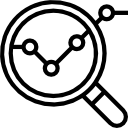

Datos desde
Arduino
Señal analógica
Sin conexión
Análsis
Bíceps

Sin conexión
Los lineales
Gustavo Mújica

Ricardo Martinez
Alejandro Zapett
Proyecto lectura de señal mioeléctrica
Los datos aquí recopilados provienen de la lectura de señales mioeléctricas. Por medio de electrodos se registra la diferencia de potencial del músculo, la cual pasa a una etapa de amplificado y posteriormente a una de filtrado.
Para prosentar los datos provenientes del sistema, se usa la placa controladora Arduino. Con Node Js se programa la lógica correspodniente y se monta un servidor que manda los datos a través de la red.